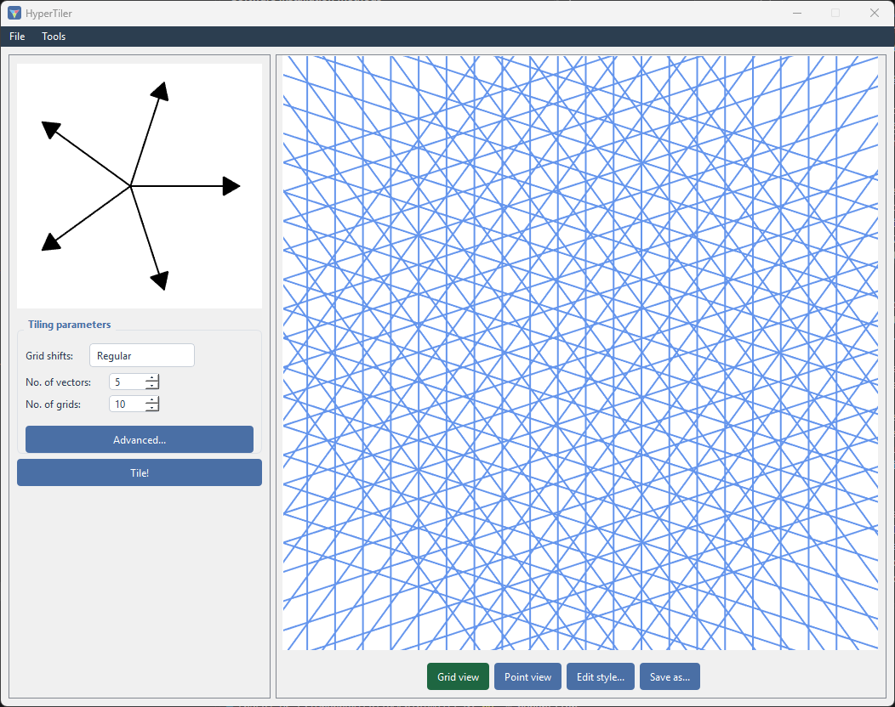
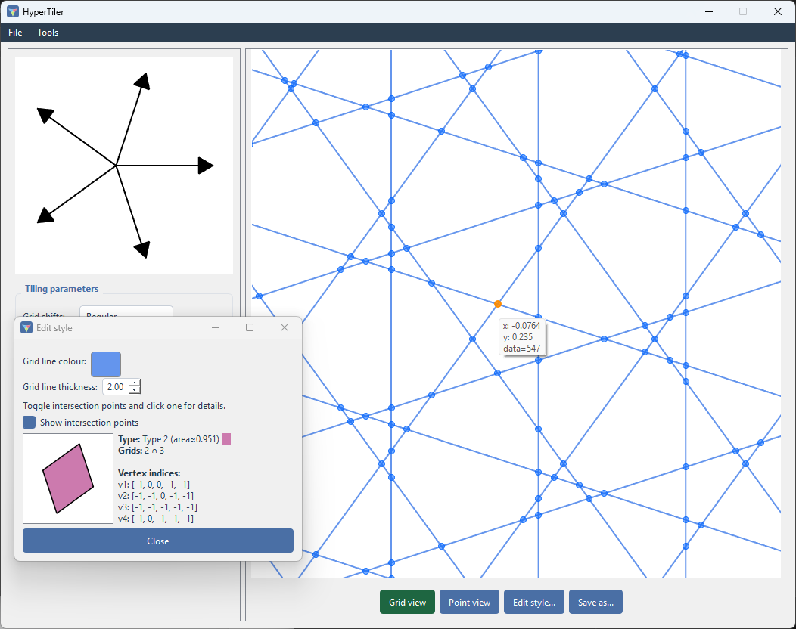

Theory
Not going to go too deep here, but some context for the mathematics behind how each method works, and why changing certain parameters produces different tilings.
Both methods produce quasiperiodic tilings : no translational symmetry (you can never slide the tiling onto itself and have it match, the way you can with a grid of squares), but still strongly ordered rather than random. That order is what shows up as sharp peaks when you run Compute FFT on a tiling - the same signature scientists look for to identify real quasicrystals.
Dual-grid method
This is de Bruijn’s construction N.G de Bruijn, 1981, the one behind Penrose tilings among others.
Take N families of parallel lines - one family per grid vector. Each
family is an infinite set of evenly-spaced parallel lines perpendicular to
its vector, offset from the origin by that vector’s shift (a fraction
of the line spacing). With N vectors arranged symmetrically (e.g. 5
vectors 72° apart), overlaying all N families creates a mesh of crossing
lines - the “multigrid”:

Lines in a family are separated from their origin governed by their vector. Each step away from the origin is given an integer N. This gives each intersection point an N-tuple of
integers. The dual step maps each intersection of the multigrid
(where a line from one family crosses a line from another) to a vertex of
the actual tiling, by computing the dot product of the tile vector and the N-tuple.

Two lines crossing gives an ordinary rhombus-shaped tile; three or more lines meeting at exactly the same point (a “singular” crossing) gives a higher-order polygon instead - which is why the Grid shifts setting matters:
Zeroshift puts every family through the origin, so lots of lines cross at exactly the same points.Regularshift staggers each family just enough that crossings are generically simple (only two lines ever meet at a point), which is the usual choice for a “clean” tiling of mostly one or two tile shapes.
Whether the result is periodic or quasiperiodic depends purely on the
choice of vector. The symmetry order N: for 3, 4, or 6 for isotropic vectors will get you an ordinary periodic
tiling, but start changing the vectors and you can easily make them quasi. Higher order symmetry will always get you quasiperiodicity.
Substitution method
Also called an inflation rule. Instead of starting from an infinite grid, you start from one or more basic shapes (“supertiles”) and a rule for how each one subdivides into smaller copies of the prototile set, scaled down by some inflation factor.
Applying the rule once replaces a tile with its subdivision - one “generation”. Applying it repeatedly to a single starting tile produces patches that grow outward, generation by generation, in the same way a Penrose tiling can also be built by repeatedly inflating a single rhombus according to its own substitution rule (the dual-grid and substitution routes to a Penrose tiling are different constructions of the same underlying structure). In HyperTiler, that rule is whatever subdivision you draw in the rules SVG (see Substitution tiling) - the app reads off the geometry, it doesn’t need to know the rule algebraically.